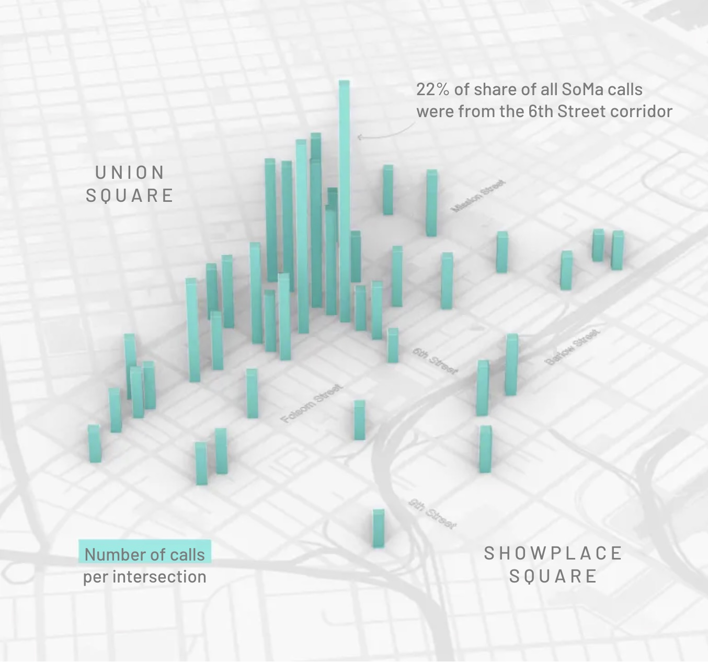
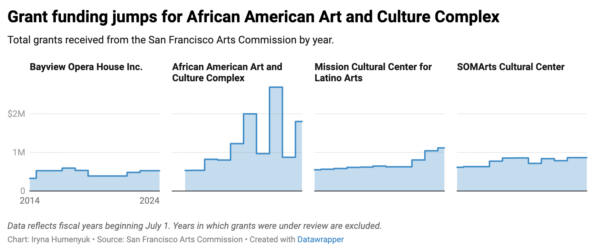
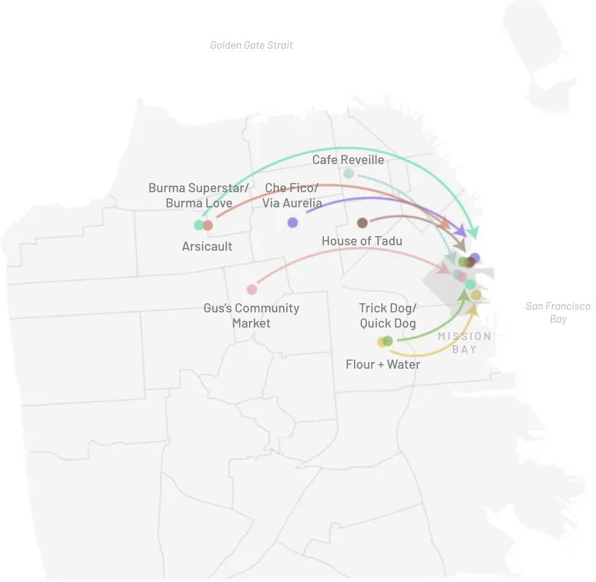
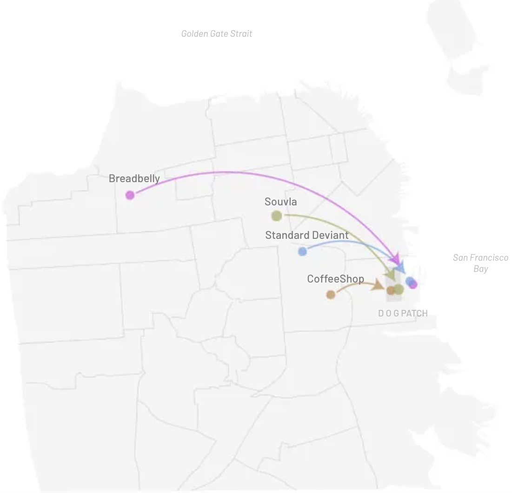
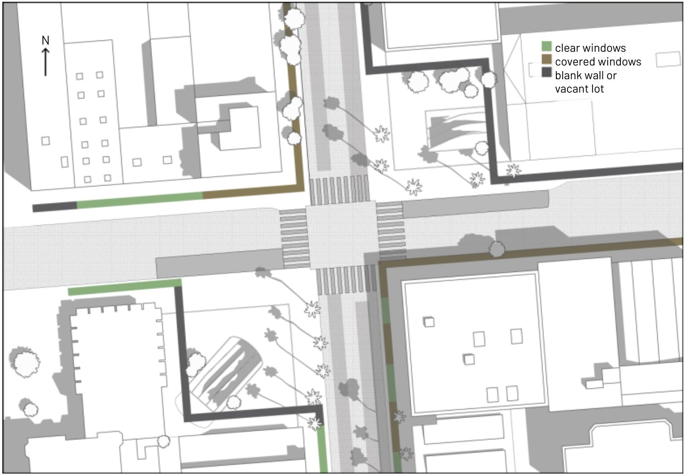
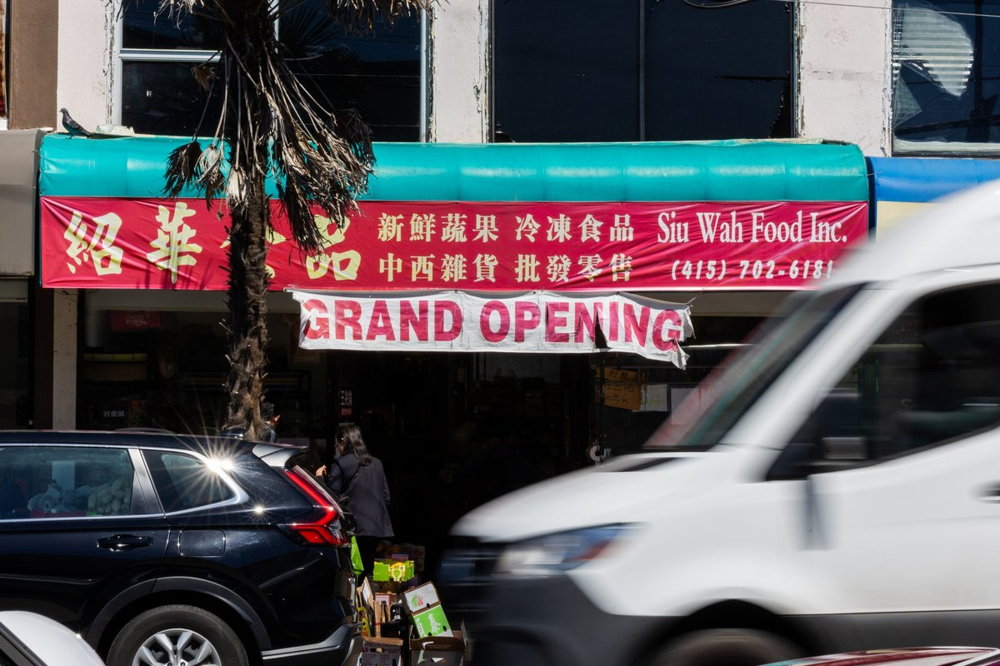
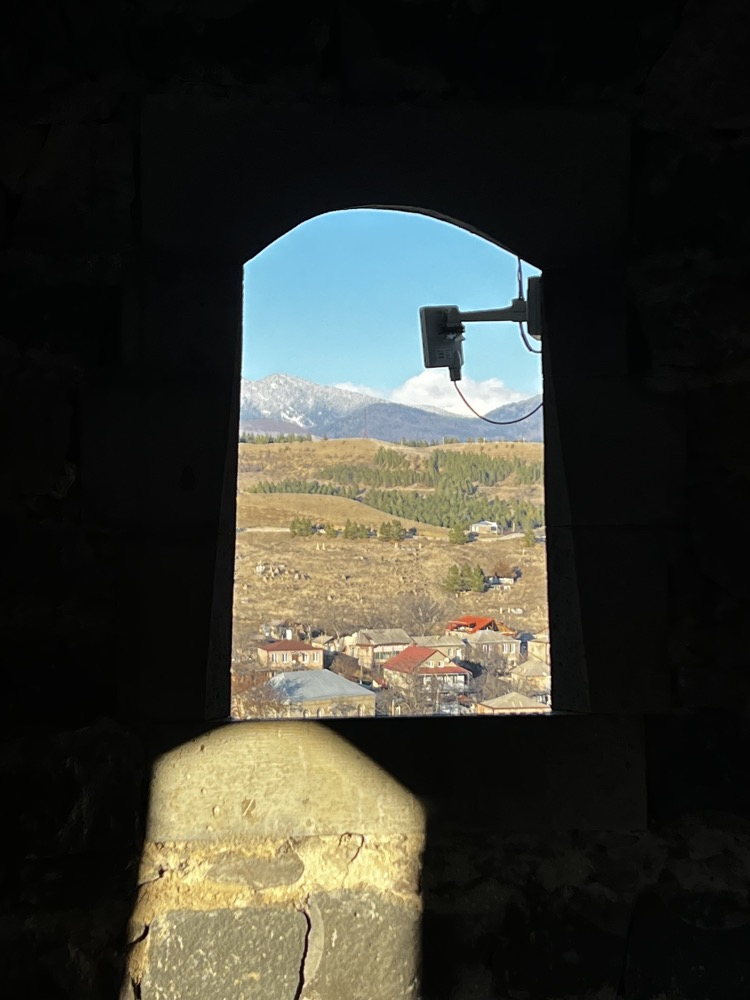
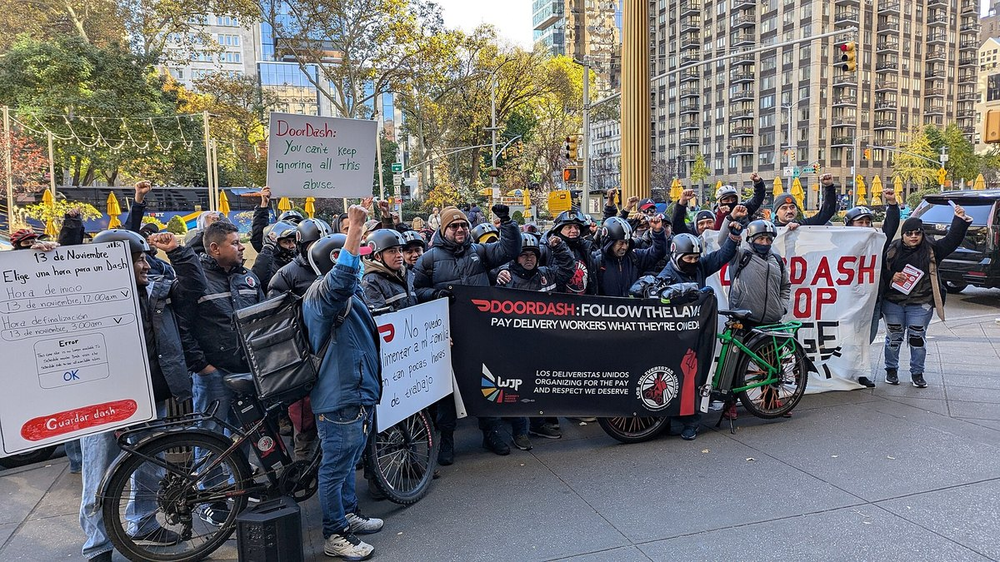

Iryna
Humenyuk
Writer, editor and designer. Data journalism, editorial and visual storytelling. Columbia Journalism × Waterloo Architecture. Based in San Francisco.
Scroll sideways
The City's $16 Billion Books
S.F. budget cuts are coming. Here's our guide to the city's $16 billion books.
San Francisco publishes a budget almost nobody can read. This guide rebuilds it as a treemap of every department at once, against a projected $607m deficit: a general hospital $94m short, a sheriff's department on track to exhaust its budget on overtime, and federal money that swung 211 percent in a year.
Built as a guide rather than a story, so a reader can go straight to the department they care about and see it sized against everything else the city spends.

D3 · Python
Students Left Sweating
New York City classrooms without air conditioning face rising health threats.
In 2020 the city tracked air-conditioning capacity across its 1,473 public schools. Only 18 percent of classrooms in Queens Village are air conditioned, a record low; in seven neighborhoods it is 100 percent. Household incomes are comparable, so the gap tracks race rather than money. Heat-related emergency visits climb sharply above 90°F.
An independent project, built from the city's own school-facilities records — the only dataset that says which rooms have cooling — and matched against neighborhood income.

Datawrapper · Python
Is AI Stealing Jobs?
A self-directed explainer testing the labor debate's most repeated claim.
Thirty occupations against a decade of Bureau of Labor Statistics data, measured on the 14 percent national average. The professions in decline are mostly small; the largest collapse is food service, 420,000 jobs short of where growth would have put it.
The second chart sizes each profession by how many people it employs, which is where the claim thins: the occupations shrinking fastest are among the smallest. White-collar share has been flat since 2009.


RAWGraphs · ai2html · Datawrapper · Excel · Adobe Illustrator
Labradors West, Chihuahuas East
The most common dog breed in every San Francisco zip code, 2015 to 2025.
Licensing data is the kind of municipal record that exists to be filed and forgotten. Mapped from Animal Care & Control microchip registrations in Python and GeoPandas, it splits the city in two: Labradors across the west, Chihuahuas across the east, German Shepherds along the northern waterfront.
In 94103 alone, Chihuahuas were registered more than 750 times in a decade, the densest concentration of any breed in the city.

Python · GeoPandas · Datawrapper
A Containment Zone?
Police answer West SoMa's most urgent calls quickly, and its lower-priority ones far more slowly.
Life-threatening calls are met in seven and a half minutes, 8 percent faster than the city as a whole. The next tier down takes forty minutes, 55 percent slower. The tier below that takes nearly two hours. The district supervisor called the neighborhood a containment zone; the police blamed a citywide shortage of officers.
The chart maps calls for service per intersection across three months. Almost a quarter came from the 6th Street corridor alone.

Rhinoceros 8 · Adobe Illustrator · ai2html
Whose Arts Get Funded
San Francisco pays for its cultural centers out of a hotel tax, and the money has never been steady.
Across a decade of Arts Commission records, one center pulls away from the rest: the African American Art and Culture Complex, whose annual grants climbed past $2.5 million. Bayview Opera House, SOMArts and the Mission Cultural Center for Latino Arts each stayed near or below $1 million throughout.
The centers absorbed a 10 percent cut last fiscal year, about $90,000 of it at SOMArts. The Mission Cultural Center closed in January. City Hall has since agreed to pay grants up front.

Datawrapper
The Aura of Authenticity
San Francisco's best-loved restaurants are opening outposts on the waterfront, and little of it is accidental.
Developers court them with improvement allowances and help on construction costs. To pull people into a big new development, as one put it, you need some aura of authenticity.
Arsicault, Che Fico, Burma Superstar, Flour + Water and Trick Dog have all taken a second address in Mission Bay; Breadbelly, Souvla and Standard Deviant have done the same in Dogpatch.


Adobe Illustrator · ai2html
Blank Walls at 16th and Mission
BART is redesigning the 16th Street plazas for the first time in two decades. The storefronts facing them have been going dark.
This is an active-edge survey in the manner of Gehl: every ground-floor frontage drawn and classed by what it offers the street. Clear windows in green, covered windows in olive, blank wall or vacant lot in charcoal. Green is the rarest color on the map.
In 2018 only two markets had full transparency onto the plazas. Walgreens, the City Club and Mission Hunan have closed since, and one fire-damaged building has stood boarded since 2022. Several of the covered windows breach the city's transparency code.

Adobe Illustrator · Rhinoceros 8 · ai2html
The Grand Openings Never End
Three Asian groceries on one block of Irving Street, all still flying the banner they hung the day they opened.
Janet Zeng opened Siu Wah Food in 2021, after eight months paying rent on an empty storefront while the city processed her paperwork. Two more groceries opened nearby. In 2026 all three banners are still up. Zeng first said they were simply too lazy to take hers down, then admitted it draws people in.
A sociologist of immigration put the economics plainly: take the sign down and you are another invisible grocery store in a sea of invisible grocery stores. Younger owners call it an older-immigrant habit — until one of them says she would do anything to keep her business going.

A Tale of Two Mosques
How one Orthodox-majority government oppresses Islam.
Reported in Tbilisi, Batumi and the southern border villages for a Columbia thesis. Tamar Gelashvili, a filmmaker preserving historic mosques, is coerced into informing by the secret police. Tariel Nakaidze spends a decade seeking a permit for a second mosque, gathers 12,000 signatures, and is refused.
In 2023 an appeals court called the city's refusal illegal and discriminatory, then withheld the permit anyway on zoning. Gelashvili, who coined the term “Georgian mosque,” documents the buildings and crowdfunds repairs; she sometimes finds the doors chained.


Eighteen Dollars, or Thirty
New York set a minimum wage for delivery drivers. It did not require the apps to say which of two rates they were paying.
Reported in French, with Senegalese drivers breaking their Ramadan fast outside a halal market on 115th Street. Eighteen dollars an hour for time on the clock, or thirty for trip time alone — and no duty to tell a driver which one applies to him. One can work thirty-five hours and take home less than a friend who worked twenty.
The finding that only comes from talking to workers in their own language: undocumented drivers log in on accounts registered to someone else, so when an order goes wrong the penalty falls on whoever lent the papers, not on whoever made the delivery.

Garlic in His Shoes
Kervin Castro crossed the Darién Gap with his two sons, aged eleven and nine, and crushed garlic in his shoes.
Behind them lay the bodies of migrants who had tried before. They had lost the trail — marked by blue backpacks tied to trees — before a man from an Indigenous community ferried them across by raft, and on toward a 3,400-mile walk to the U.S. border.
In New York the story turns to what greets them: Temporary Protected Status for Venezuelans, a $545 fee most cannot pay, and resentment from migrants who arrived earlier. One man, asked how often he got outside during nineteen months in detention, answered: once.
The House Haldenby Built
A profile for Azure of Rick Haldenby, who directed Waterloo's architecture school for twenty-six years and moved it into a derelict silk mill.
Three and a half thousand words, reported from Rome and Cambridge. He paid for the first Rome studio's chairs himself, at twenty-seven; the building opened twenty-five years to the day after that first Rome class.
Also for The Architect's Newspaper, on why designing for disability belongs at the center of rebuilding Ukraine; and earlier, forty-plus articles for Frame in Amsterdam on sustainability and public policy in architecture.
Colophon
Selected work, most recent first. Full clip archive on LinkedIn; published pieces live with their original publishers and are linked rather than reproduced here.
Set in Helvetica. Built as a single static page, no framework, no tracking. Each piece lists the software it was made with.